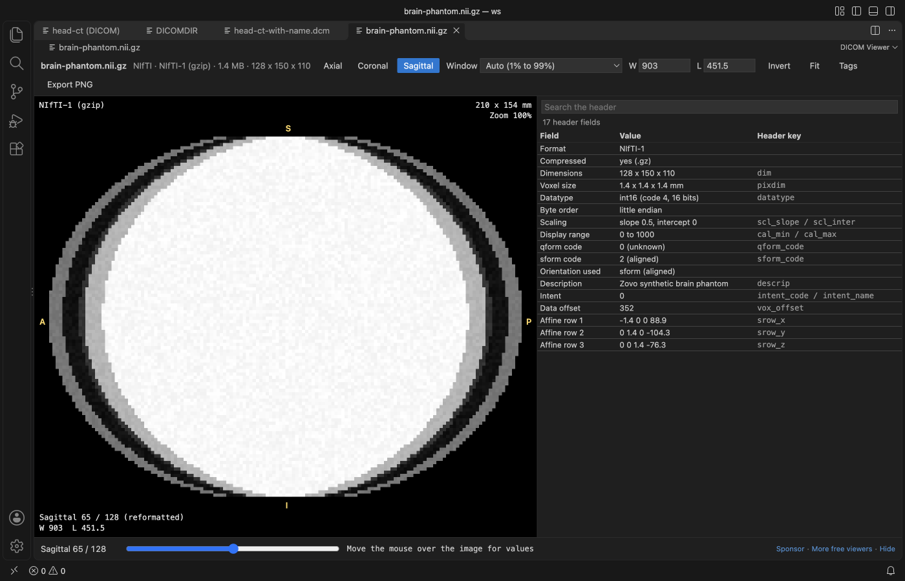

Open files in VS Code and Cursor / 3D and imaging
DICOM to NIfTI in VS Code
Open the DICOM series in DICOM Viewer and click To NIfTI in the toolbar. It saves the series as a .nii.gz volume with the real voxel size and the scanner orientation (sform and qform). Viewing, windowing and the tag table are free; Convert DICOM to NIfTI is a Zovo Pro tool with 3 free tries, then USD 19 once. For large studies and scripted pipelines, dcm2niix is the standard tool.
Free, MIT license. Extension ID zovo.dicom-nifti-viewer, version 0.2.0. Needs VS Code 1.90.0 or newer.

Steps in VS Code
- Install DICOM Viewer from the Marketplace, or press Ctrl+P (Cmd+P on macOS) and run
ext install zovo.dicom-nifti-viewer. - Right-click the folder of slices in the Explorer and pick Open Folder as DICOM Series. A single
.dcmfile or aDICOMDIRopens with a click. - Scroll the slices and check the series. A yellow bar shows when Patient's Name or Patient ID is filled.
- Click To NIfTI in the toolbar, or run "DICOM Viewer: Convert DICOM Series to NIfTI (.nii.gz) (Zovo Pro)" from the Command Palette.
- Save the
.nii.gzfile. The voxels are the values the viewer shows, so CT stays in HU. - The first 3 runs are free. A try counts only when the file is saved.
- Click the new
.nii.gzto open it in the same viewer and check the orientation letters and header fields.
Where Zovo Pro saves time
Opening DICOM files, DICOM folders and NIfTI (.nii and .nii.gz) is free: window presets, axial, coronal and sagittal views, the value under the cursor, the tag table, the anonymity check and Export PNG. The conversion to NIfTI is a Pro tool.
Right-click a folder that holds several series and you get one .nii.gz per series in one run. The second Pro tool, Export DICOM tags to CSV, writes one row per file with modality, dates, series, size, spacing, position and scanner, so you can check a dataset before training.
With Convert DICOM to NIfTI (Zovo Pro)
- Right-click a folder that holds several series in the Explorer and run Convert DICOM to NIfTI. Each series becomes its own
.nii.gzfile. - Color (RGB) series are skipped.
- For a tag list, right-click the folder or run "DICOM Viewer: Export DICOM Tags of a Folder to CSV (Zovo Pro)".
- Pick Summary for one row per file that only says whether Patient's Name and Patient ID are filled, or Every tag for one column per tag, patient data included.
Convert DICOM to NIfTI works 3 times on your computer before it asks for a license, and a try counts only when you get a result. Nothing about Pro shows when you open a file.
Zovo Pro costs USD 19 once. It is not a subscription, and it turns on the Pro tools in every Zovo extension, not only DICOM Viewer. After a card payment (Stripe) your license key shows on the next page. In VS Code, run "Zovo Pro: Enter Zovo Pro license key" from the Command Palette and paste it. The key is checked on your computer, with no network call. With GitHub Sponsors, pick the "$19 one time" tier, then run "Zovo Pro: I already paid: unlock with GitHub Sponsors" and sign in with the same GitHub account. With PayPal, send USD 19 with "Zovo Pro" in the note and the key comes by email within a day.
A team of 5: USD 59 once, by card or by PayPal. Every rule and every Pro tool is on the Zovo Pro page.
Steps in Cursor, Windsurf or VSCodium
- Open the Extensions view with Ctrl+Shift+X (Cmd+Shift+X on macOS).
- Search for
zovo.dicom-nifti-viewerand click Install. Cursor, Windsurf and VSCodium install from Open VSX, where it is published aszovo/dicom-nifti-viewer. - If your editor has no gallery, download the .vsix from the Open VSX page and run "Extensions: Install from VSIX...".
- Then use it the same way as in VS Code.
What DICOM Viewer handles
- Saves a DICOM series as one .nii.gz volume.
- Keeps the real voxel size and the scanner orientation (sform and qform), so nibabel, ITK-SNAP, 3D Slicer and training code read it in the right place.
- The voxels are the values the viewer shows: CT stays in HU, with Rescale Slope and Intercept applied.
- A folder with several series gives one file per series. Slices are sorted by Image Position (Patient).
- Reads Implicit VR Little Endian, Explicit VR Little Endian, Explicit VR Big Endian, Deflated Explicit VR Little Endian and RLE Lossless.
- Never writes over a DICOM or NIfTI file. No network calls and no telemetry.
What it does not do
- JPEG Baseline, JPEG Extended, JPEG Lossless, JPEG-LS, JPEG 2000, HTJ2K and MPEG or HEVC video aren't decoded yet. Those files open with their tag table only, so convert them with dcm2niix.
- Color (RGB) series are skipped. PALETTE COLOR images and 1-bit pixels aren't decoded.
- It saves the .nii.gz volume only. It writes no BIDS JSON sidecar; dcm2niix does.
- Scans over 1024 MB are not read unless you raise
dicomViewer.maxFileMB(up to 4096).
Other options
- dcm2niix. The standard free DICOM to NIfTI converter in neuroimaging. It handles compressed transfer syntaxes and vendor details, and writes BIDS JSON sidecars. Use it for big datasets and scripted pipelines.
- MRIcroGL. A free desktop viewer from the dcm2niix author with a window for dcm2niix built in. A good pick if you prefer a window to the command line.
- dicom2nifti (Python). A Python package.
dicom2nifti.convert_directory(dicom_dir, out_dir)converts every series in a folder from your own code. - 3D Slicer. A free desktop app. Load the series with the DICOM module and save the volume as .nii.gz. Good when you also need to segment or view in 3D.
Install counts and Open VSX status were checked on 10 November 2026. Descriptions in quotes are the extensions' own.
Questions
Should I use this or dcm2niix?
For a large study or a scripted pipeline, use dcm2niix. It is free, fast and handles compressed DICOM and BIDS. DICOM Viewer fits when you want to look at a series in VS Code, check its tags, and save that series as NIfTI.
Does CT keep Hounsfield units?
Yes. The voxels are the values the viewer shows, so CT stays in HU.
Will nibabel and ITK-SNAP read the orientation right?
The file keeps the real voxel size and the scanner orientation in sform and qform, so nibabel, ITK-SNAP, 3D Slicer and training code read it in the right place.
Is patient data sent anywhere?
No. DICOM Viewer makes no network calls and sends no telemetry. The yellow bar warns when Patient's Name or Patient ID is filled, but it is a check, not a de-identification tool.
Does it work in Cursor or Windsurf?
Cursor and Windsurf install extensions from Open VSX. Search for DICOM Viewer in their Extensions view and install it there.
More about DICOM Viewer
Read the DICOM Viewer page for every feature and setting, or the source code on GitHub.
Related guides
- Open DICOM and NIfTI files in VS Code
- View STL files in VS Code
- Calculate the volume of an STL file
- DXF to CSV in VS Code
Support this work
If this extension saves you time, you can support the work on GitHub Sponsors. Monthly tiers start at $5, and one-time tiers start at $15. Sponsorship is optional, and the tool works the same without it.
Need your format supported?
Open a format request with a sample file, and I reply there whether it can be done. For USD 299 once, through this GitHub Sponsors tier, I add your file format or a missing feature to this extension, with tests, within 7 days.